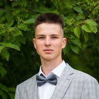

Пензенский государственный технологический университет
Люкшин Виталий Дмитриевич

Контактная информация
Телефон (рабочий): +7 (951) xxx-xx-xx
Email: 0806vit.lyukshin@gmail.com
Основная информация
Дата рождения: 25.08.2006г.
Семейное положение: не женат.
Vk: https://vk.com/v1tallity
Образовательная история
Университет: Пензенский Государственный Технологический Университет (ПензГТУ)
Факультет: Информационных технологий
Курс: 2 курс, группа 24ИВ1б
Окончание: 2028г
Навыки
- Языки программирования: python, c# (базовый уровень).
- Программы: Microsoft Office, Adobe Photoshop, Visual Studio, Unity, Sony Vegas pro 16 (базовый уровень).
- Soft skills: Коммуникабельность, умение работать в команде, ответственность, стремление к обучению.
- Иностранные языки: Английский: Уровень B1.
О себе
Люблю изучать новое в области программирования, читаю литературу. В свободное время занимаюсь спортом (волейбол, Hard Enduro). Также люблю путешествия и отдых на природе.